Taka, Hyogo: things to do, food and stays
Taka · Hyogo
Taka
Highlighted on the Hyogo map.
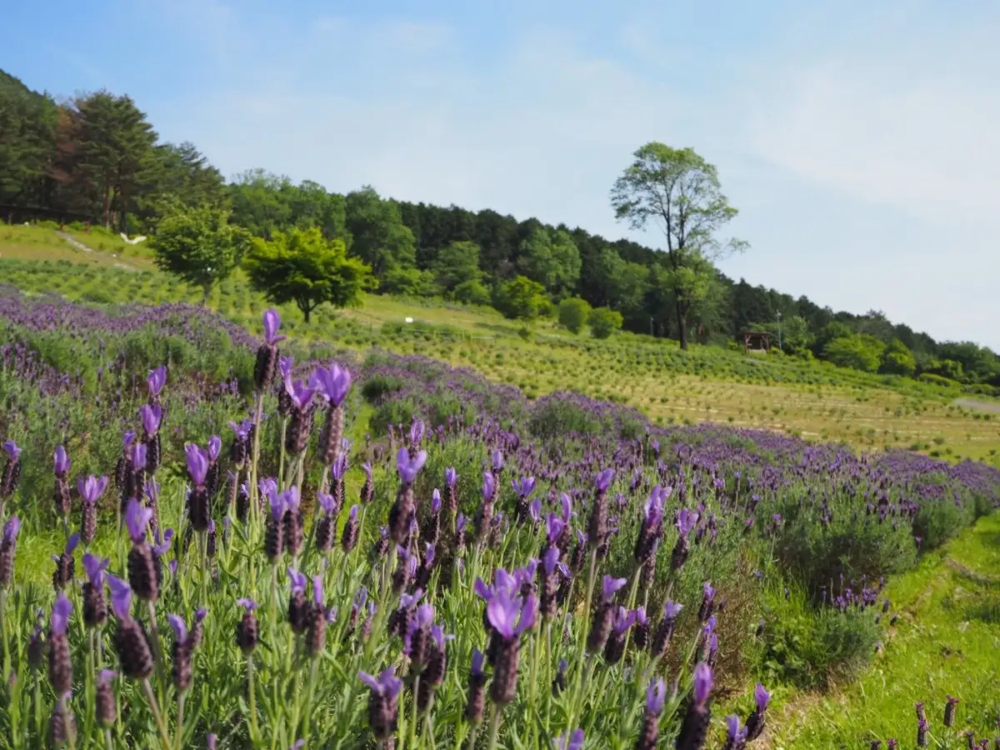
Stay
エーデルささゆり
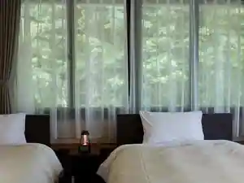
Ederu Sasayuri
農園民宿 春名
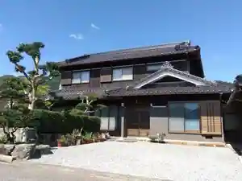
Noen Minshuku Haruna
ヴィレッジフォレスト妙見
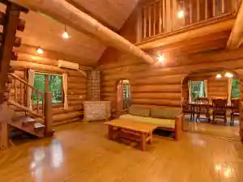
Virejjiforesuto Myoken
Kaji家
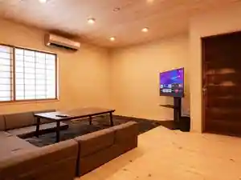
Kaji Ie
Inn in Nakakukajiya, Taka with a renovated traditional house.
Dining
TORI MARCHE TAKACHO
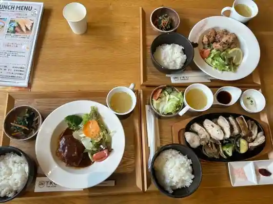
TORI MARCHE TAKACHO
古時計
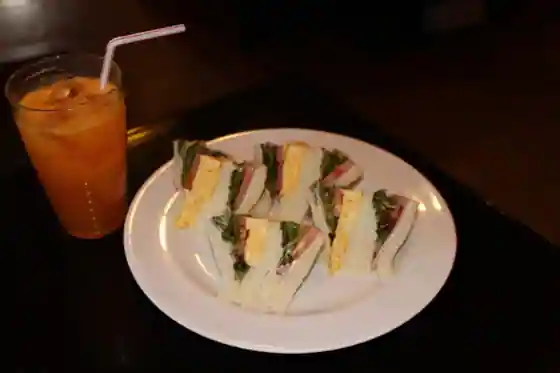
Furudokei
手打ち蕎麦処 龍玄庵
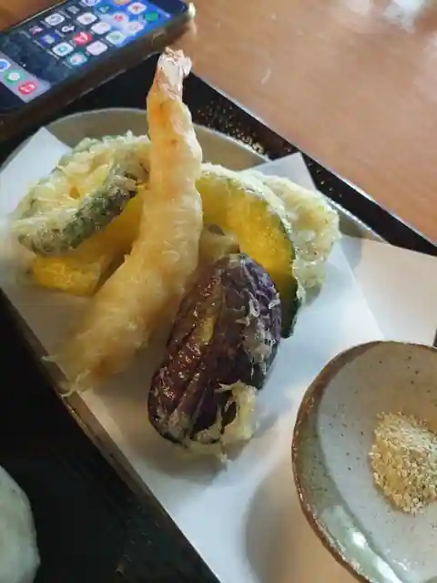
Teuchi Chi Sobadokoro Ryu Gen'An
中華食堂 四川飯店
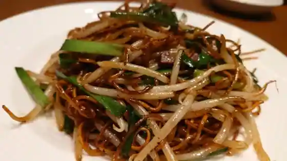
Chuka Shokudo Shisen Meshi
レストラン 車留満
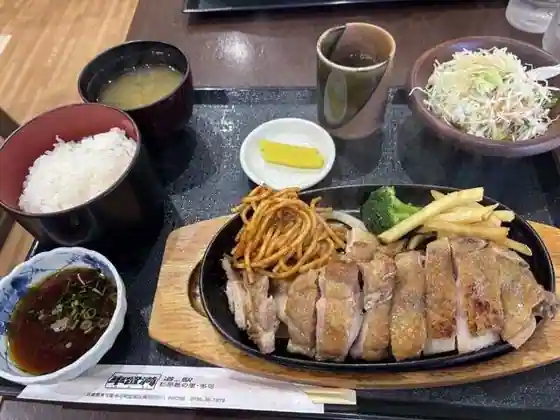
Restaurant Kuruma Ryu Man
鳥富
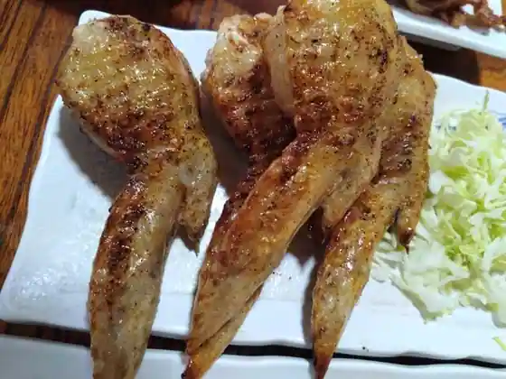
Tori Tomi
ボリジ
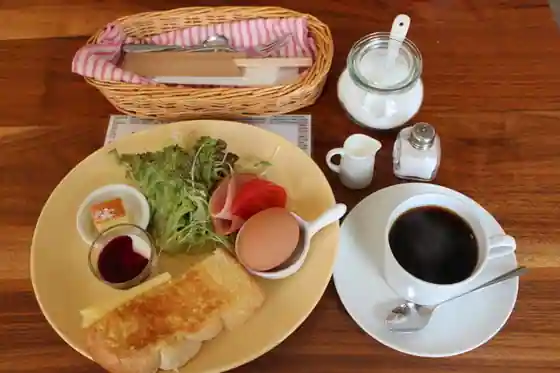
Boriji
畑やんラーメン
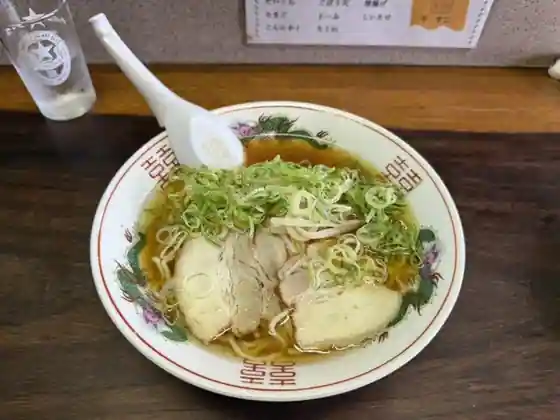
Hatake Yan Ramen
マイスター工房八千代
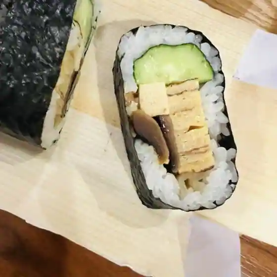
Maisuta Kobo Yachiyo
What's poppin
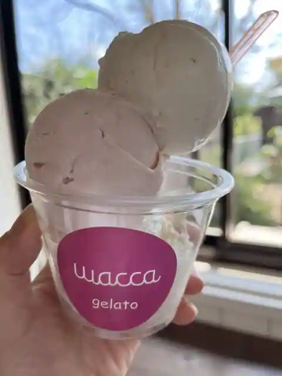
What's poppin
妙見富士カントリークラブ レストラン
Myoken Fuji Kantorikurabu Restaurant
ベロ カフェ
Bero Cafe
戎屋菓子店
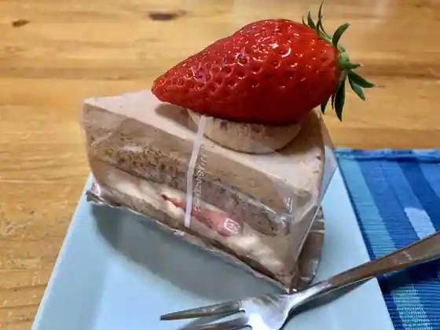
Ju Ya Kashi
そばんち一力
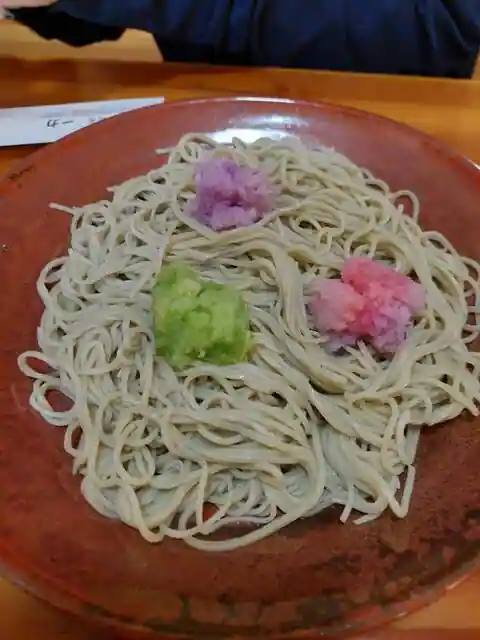
Sobanchi Ichiriki
喫茶ラベンダー
Kissa Rabenda
豆富どころ もりとみ 多可店
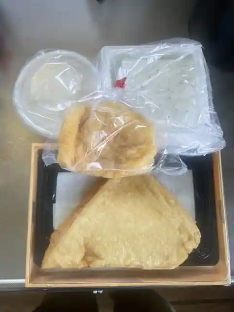
Tofu Dokoro Moritomi Taka
れもんの木
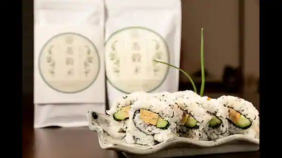
Remonno Ki
おむすびキッチン 夢蔵
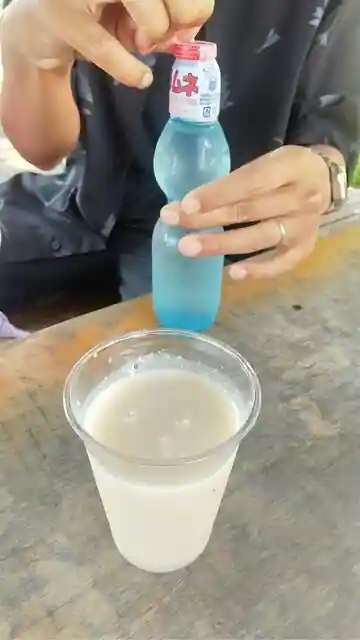
Omusubi Kitchen Yumezo
リンデン
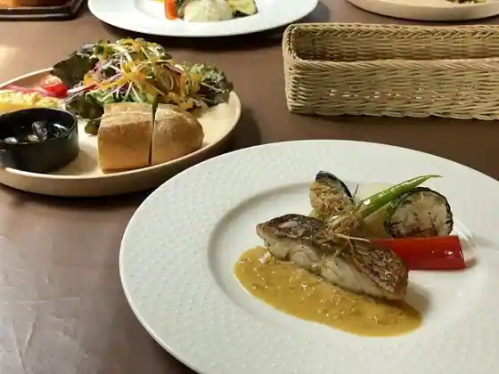
Rinden
成実
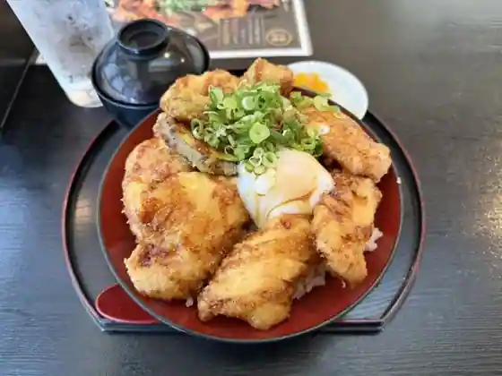
Jojitsu
カフェ チャッタナ
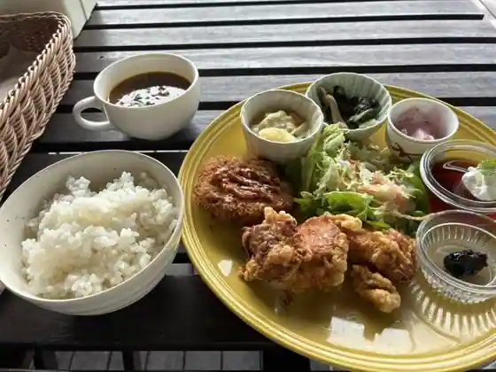
Cafe Chattana
杉原紙の里 多可
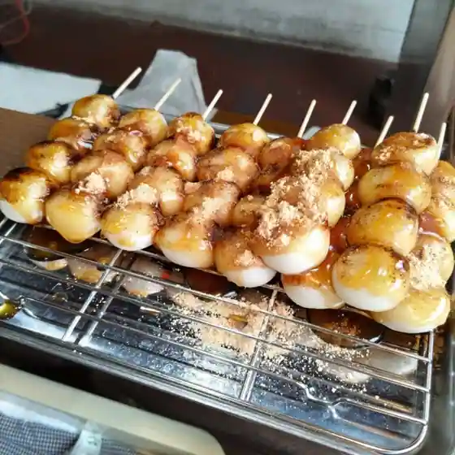
Sugihara Kami No Sato Taka
大八万楼
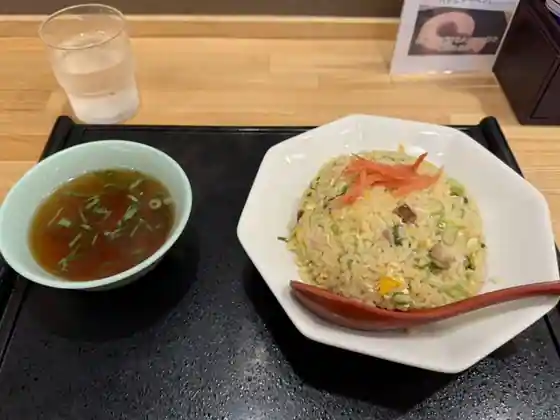
Daihachi Man Ro
Cafe Season
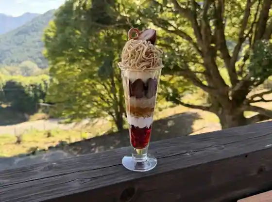
Cafe Season
Sights
Rabenda Park Taka